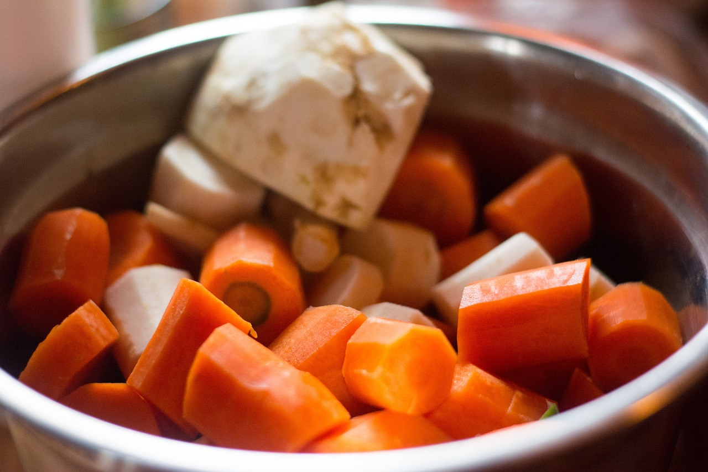

Wstęp
Rosół to tradycyjna polska zupa, przygotowywana na bazie bulionu z mięsa (najczęściej drobiowego) oraz warzyw, takich jak marchew, seler, pietruszka i por. Charakteryzuje się klarownym wywarem o delikatnym, aromatycznym smaku, często podawanym z makaronem i przyprawionym świeżą natką pietruszki.
Składniki
- 1-1,5 kg mięsa z kością (np. kurczak, wołowina lub mieszanka kurczaka i wołowiny)
- 2-3 marchewki
- 1-2 pietruszki
- 1 por (biała część)
- ćwiartka selera
- 1 mała cebula
- 3-4 liście laurowe
- 4-5 ziaren ziela angielskiego
- kilka ziaren czarnego pieprzu
- sól do smaku
Przygotowanie
- Mięso dokładnie opłucz pod zimną wodą. Jeśli używasz całego kurczaka, podziel go na części.
- Mięso umieść w dużym garnku i zalej zimną wodą (około 2-3 litrów). Powoli doprowadź do wrzenia.
- Kiedy na powierzchni pojawią się szumowiny (biała piana), zbierz je łyżką cedzakową, aby rosół był klarowny.
- Marchew, pietruszkę, selera i pora obierz i dodaj do garnka z gotującym się mięsem.
- Cebulę opal nad ogniem (na kuchence gazowej lub suchej patelni) aż się lekko przypali, co nada rosołowi złoty kolor i intensywny aromat. Dodaj do garnka.
- Wrzuć liście laurowe, ziele angielskie i pieprz ziarnisty.
- Gotuj rosół na bardzo małym ogniu przez około 2-3 godziny. Rosół powinien jedynie lekko „mrugać”, aby smaki mogły się powoli przenikać.
Serwowanie
Rosół posyp natką pietruszki i serwuj z makaronem nitkowym lub kluskami lanymi.
Galeria

Duplikat strony
Dutlikat tej strony znajdziesz tutaj.